Design Problem
In the midst of the Covid-19 pandemic, small businesses in the United States are struggling to keep afloat. Consumers are increasingly relying on online shopping from large retailers such as Amazon. Through user interviews, we found there is a need for geographic-specific and centralized tool to guide consumers towards local business alternatives.
How can we enable people to (1) more easily divest from large retailers and businesses, and (2) discover and purchase products in their immediate area?
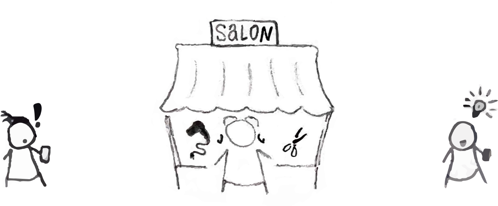
Project Overview
- Discipline: Interaction Design
- Course: SI 582 Interaction Design
- Duration: Aug. 2020 - Dec. 2020
- With: Lingyu Zhao, Seung Jun Kim, Xinyi Wang
- Tools Used: Sketch, Figma, Photoshop, Illustrator
Approach
For the course project in SI 582: Interaction Design, teams spent the semester solving an interaction design problem with a user-centered design approach. We began by deciding upon a design problem and doing domain research, and then creating interview protocol and conducting virtual user interviews. After we went through the user feedback, we were able to align on a core set of features. From there, we crafted stakeholder personas and user interaction scenarios that were made into paper-prototypes. Conducting usability tests provided qualitative insights that we applied towards building wireframes. Using Sketch and Figma, we then designed a high fidelity prototype. After gathering additional user feedback, we iterated on the concepts to create a “final” version of the high fidelity prototype.
Research & Discovery
Domain research
We researched competitor services, websites, and applications in order to gain an understanding of the product landscape. We focused on Yelp (direct competitor), Threshold.us (parallel competitor), Shop (partial competitor), and Etsy (partial competitor). The criteria we looked at included usability, functionality, look & feel, good design, and accessibility. We ultimately found that:
- There are some easy-to-access guides and web applications dedicated to gathering information about ethical alternatives to large retailers.
- There is a lack of accessible tools that allow potential consumers to find small businesses’ brick and mortar or online shops.
- Many local businesses do have digital storefronts and an online presence but they are not all centralized in a single application.
Through analyzing competitor’s products, we found that many offered similar features, but none offered the exact combination of functionality that would solve for our design problem.
Stakeholder Interviews
Despite the pandemic, we were able to conduct user interviews, albeit remotely. We aligned on interview protocol and then each team member interviewed three potential users (a total of 12 users). We distilled all of our interviews and findings into the following insights:
- Customer Experience: Convenience, customer service, quality, and speed are some of the primary reasons why U.S. consumers buy from large online retailers over small businesses. These factors often outweigh ethics concerns depending on which social and economic issues resonate closely with the consumer.
- Unique Offering: Some U.S. consumers buy primarily from large online retailers, but still transact with direct-to-consumer brands that have unique product offerings and only sell via their own channels.
- Ethics & Values: Many U.S. consumers say they don’t want to fund harmful activities and want to receive information on ethical and unethical business practices. Additionally, many find it important to be informed about unethical business practices (compared to ethical practices) in order to act on that information.
- Information Access: Some U.S. consumers access information about small businesses via mobile applications, such as Google products (search, chrome, maps), Instagram, and Yelp, as well as blogs and news sites. Some prefer to buy new apparel and groceries in brick and mortar stores in order to ensure quality, however, others are comfortable with shopping for these items online.
- Word-of-Mouth: Some U.S. consumers discover new, small businesses via word of mouth and social media content.
- Safety: The COVID-19 pandemic has made it more enticing to shop online due to safety concerns.
Stakeholder Personas
We crafted two personas, focusing on the motivations and obstacles that people may experience while shopping or managing a small business. These simplified personas helped us orient ourselves when making product decisions.
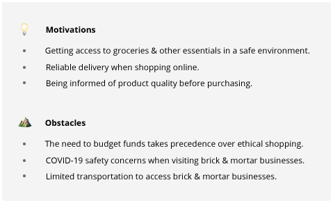
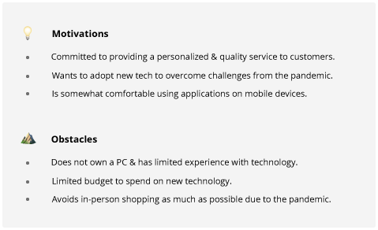
Interaction Scenarios
With the three stakeholder personas created, we crafted interaction scenarios and a set of goals and tasks that each persona should be able to accomplish with our system. We did our best to ensure each of the scenarios demonstrated how users benefit from or are impacted by our design solution.
- Scenario 1: a user wants to purchase food locally via Backyard
- Scenario 2: a user wants to discover ethical business alternatives on Backyard
- Scenario 3: a business that is setting up their Backyard account for the first time
Design
Storyboards
Sketching storyboards was the next step in the design process. I sketched each of the three interaction scenarios as well as additional standalone scenarios. These sketches ultimately helped with our brainstorming process.
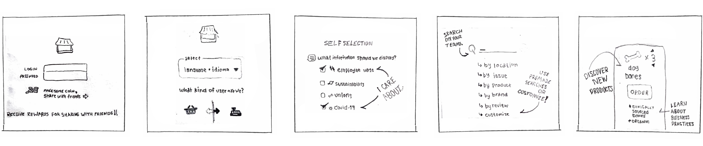
User Scenario
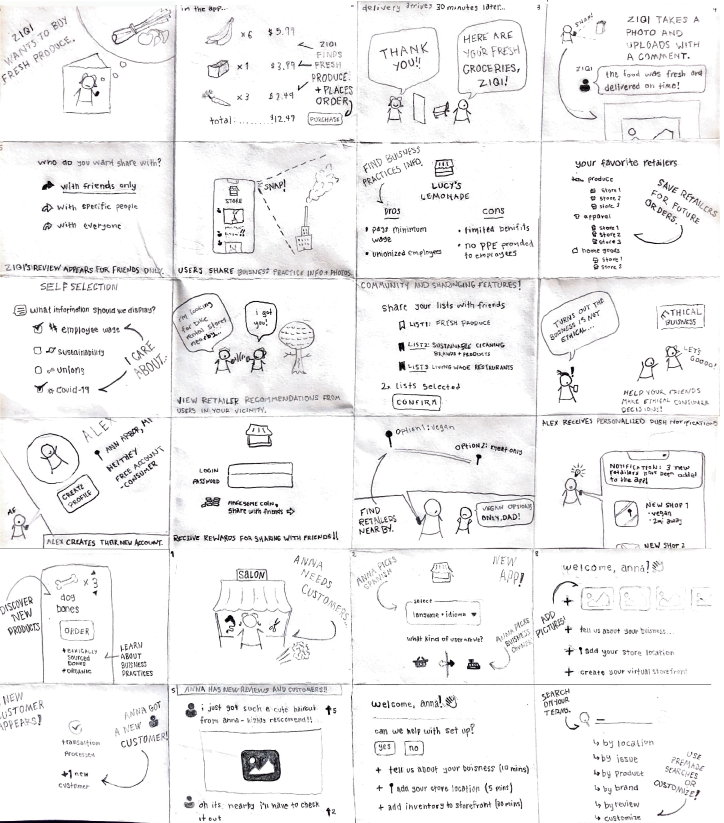
Sketches
Additionally, sketching storyboards helped us have conversations and define Backyard’s core product functionality:
- Enable consumers to access information of retailers, including the location of brick and mortar shops or online inventory and services.
- Enable consumers to share their shopping experience with their friends, businesses, and the public.
- Provide a moderated information platform for responsible businesses to thrive.
- Offer an online checkout solution built into the app.
Paper Prototype
Paper prototypes were the next phase of the design process. We pulled from our sketches and storyboards, as well as the core functionality, helped us come up with a basic site map and product userflow.
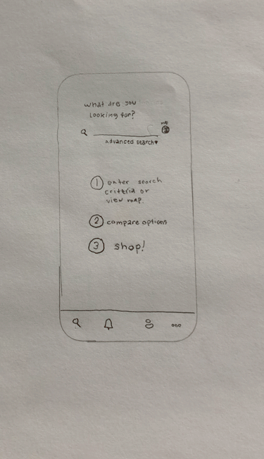
After building the paper prototype, I conducted usability tests with the same stakeholders that we initially interviewed. Due to the pandemic, the paper prototype test was conducted virtually over zoom which presented many challenges. This changed the nature of the test and, thus, the results, but it did yield some valuable insights that we applied to building our wireframes:
- Users where confused by what would happen if they interacted with the heart button. We decided to change the heart icon into a floppy-disk save icon to make its utility clearer.
- The “save filter to list” feature was intended to be optional, but some users thought it might be required in order to save the filter. We ultimately decided to remove this feature.
- One user was unclear with what to do with the “execute search” check mark button. The “cancel” button was also too close in proximity to the “execute search” button. We decided to make our targets larger and spaced out further in our v1 prototype design.
Wireframes
We received feedback to narrow the scope of our design solution. We considered the “flexibility-usability tradeoff” which states that products that prioritize flexibility are often more difficult to use. We chose to focus on consumers over small business owners in order to improve the usability of our app. Additionally, we decided our most import features are the search functionality and purchase flow. We made these features have the most touch points in the wireframes as they drive the most value.
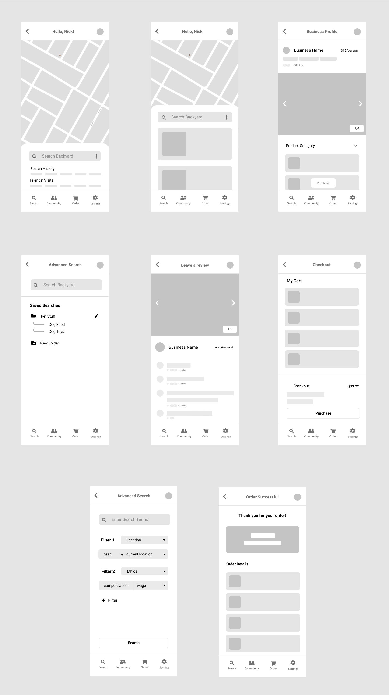
Wireframes
Visual Design
At this stage our team focused on creating a style guide so that the areas of the product we focused on were somewhat visually consistent. We focused on typography, colors, buttons, cards, and shadows.
Inspiration
I pulled inspiration from a number of websites and styles. This visual mood board served as a starting point for conversations with the team.

Typography
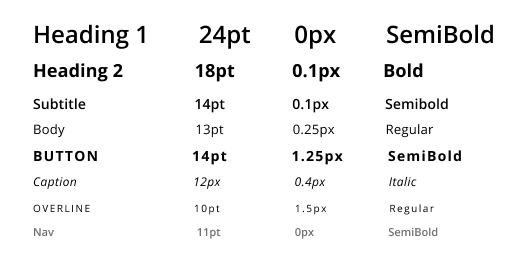
Colors
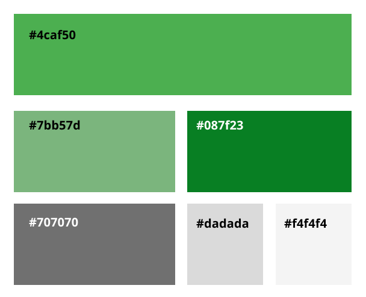
Buttons
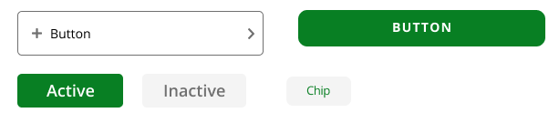
Shadows
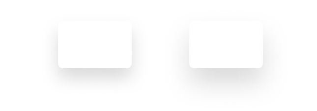
V1 High-Fidelity Prototype
The two screens I worked on for our v1 prototype included both of the advance search screens. Below you can see changes I made from the v1 to the v2 prototype.
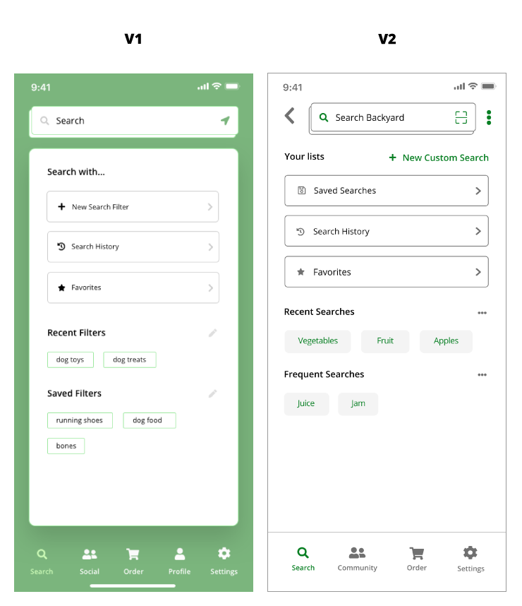
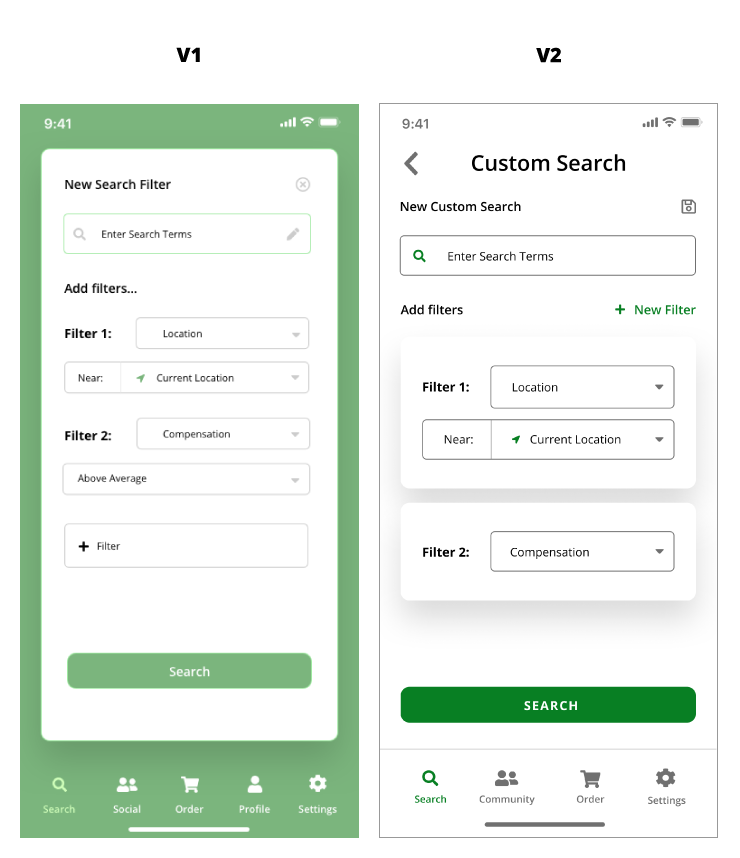
During an in-class design review, we received the following feedback on our v1 high fidelity prototype:
- Visual elements are inconsistent.
- Accessibility improvements are needed.
- Consider adding back button.
- Additional filters may be hidden from the users’ awareness if they never click the add filter button.
- It’s a little unclear where the saved filter setting are saved and if users can edit them.
Additional usability testing would help us resolve these issues.
Final High-Fidelity Prototype
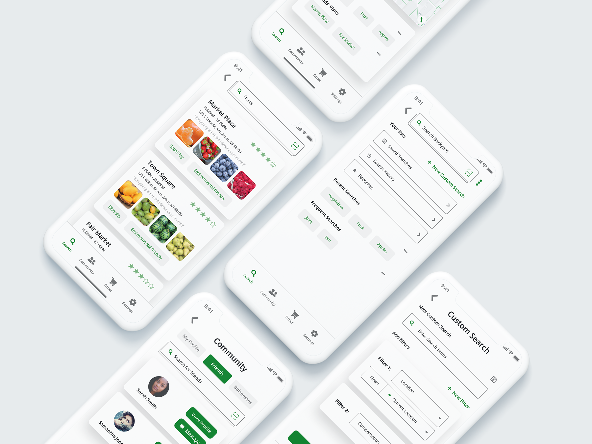
For the final prototype, we took insights from our usability tests to make a number of changes, focusing on improving the accessibility of our visual design:
- updated colors to ensure contrast ratio complied with WCAG and ADA requirements
- standardized font size, position, and style
- standardized spacing between elements using an 8x8px grid
Using a color contrast assessment tool, we tested the color contrast of white text on the green background and realized that the contrast between our initial green color and white was not sufficient in order to satisfy Web Content Accessibility Guidelines (WCAG) and American Disabilities Act (ADA) requirements. We will need to adjust our colors to ensure we comply with these important guidelines and accessibility laws here in the U.S.
Below you can find the final product slides we presented on our last day of class.
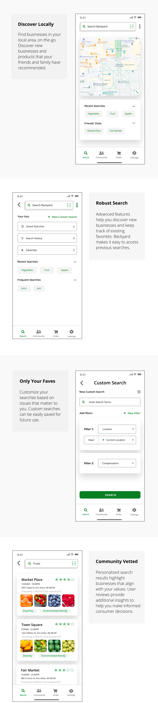
Reflection
Ultimately there were many aspects of this project that need improvement but this learning experience was a great introduction to interaction design. There are many things I would do differently in future iterations. A site map would have been helpful for our group to document and align on before designing our v1 prototype. Additionally, covid-19 made in-person usability tests much more difficult to conduct.
I believe that the search and filter features were not as thought out as they should have been. If we had additional time to iterate on the design, I would relocate the advance search features to be directly on the home search screen, as these features are core to the experience of the product. Additionally, the material impact that Backyard has on people’s lives is unmeasured and would need to be further studied and defined. Additional research would be required to determine second and third rate affects of how the technology impacts communities.
Check out some of my other case studies.